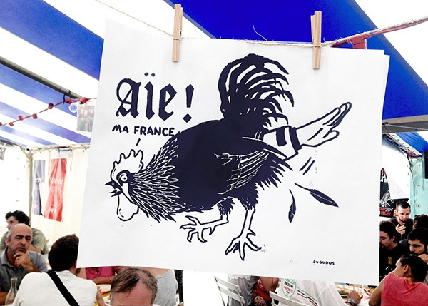

<!DOCTYPE html>
<html dir="ltr" class="sid-plesk" lang="en">
<head>
<meta http-equiv="content-type" content="text/html; charset=UTF-8">
    <title>CHANGE-MOI</title>
    <meta charset="utf-8">
    <meta name="viewport" content="width=device-width, initial-scale=1">
    <link rel="shortcut icon" href="">
    <link rel="stylesheet" href="site-base.css">
    <script src="scripts/jquery-1.9.1.js"></script>
    <script src="scripts/jquery-ui-1.9.2.custom.js"></script>
</head>
<body>
    <p class="titre">COLLECTIFS ENGAGÉS</p>

        <p class="titre-collectif">GRAPUS (1970 - 1990)</p>
        <div class="texte-gauche">
          <p class="contenu-texte">	Grapus a été fondé par Pierre Bernard, François Miehe et Gérard Paris-Clavel. En 1967, Bernard est étudiant aux Arts-Déco, il y fait la rencontre de ses deux amis et futurs collaborateurs. Avec les événements de mai 68, les trois hommes se retrouvent au sein des ateliers populaires, où les étudiants des Beaux Arts et des Arts Déco créent des "joutes visuelles" et produisent chaque jour des milliers d’affiches pour la lutte populaire.
            Traîtés de "crapules staliniennes" à l’Institut d’Environnement, ils ont l’idée du raccourci pour baptiser leur collectif. Grapus, c’est "mettre en pratique le communisme", réaliser par un travail collectif, sous une signature collective, des images sociales.</p>
          <p class="contenu-texte">Jusqu’en 1977, Grapus se consacre essentiellement à l’image politique, renouvelant la communication du PC et de la CGT.
          Le secteur culturel (théâtre de la Salamandre, Odéon, festivals d’Avignon, de La Rochelle, maisons de la culture du Havre, de Grenoble, de Nanterre) offre un espace privilégié à leurs créations où l’humour et la provocation peuvent s’exprimer librement. L’image, sans cesse parasitée (flèches, rajouts manuscrits, collages, décalages, distorsions, flous) acquiert une force et un dynamisme particuliers.

          Le groupe s’est dissout en 1990. Gérard Paris-Clavel a crée Ne Pas Plier, Pierre Bernard L’Atelier de Création Graphique et Alexander Jordan «Nous travaillons ensemble».</p>
        </div><!-- FIn DIV texte-gauche -->
        <div class="contenu-droite">
          
          
          
          <p class="contenu-texte">“On s’est mis en collectif parce qu’on avait aussi cette idée que faire des images politiques c’était les réfléchir jusqu’au bout ensemble : les parler ensemble, les critiquer ensemble, etc. et donc de les faire ensemble. Le faire est l’un des problèmes d’aujourd’hui : cela a été discuté ensemble, conçu ensemble, critiqué ensemble mais, concrètement, fait par des gens différents.» Grapus.</p>
        </div> <!-- FIn DIV contenu-droite -->


  <p class="titre-collectif">GRAPUS: MAI 68</p>
  <div class="contenu-texte texte-gauche">
    <p>Mai 68 est une période durant laquelle s’est déroulée une série d’événements constitués de grèves générales et sauvages ainsi que de manifestations, qui est survenue en France en mai et juin 1968.</p>
    <p>Ces événements, enclenchés par une révolte de la jeunesse étudiante parisienne, puis gagnant le monde ouvrier et la plupart des catégories de population, constituent le plus important mouvement social de l’histoire de France du xxe siècle.</p>
    <p>Il est caractérisé par une vaste révolte spontanée antiautoritaire, de nature à la fois culturelle, sociale et politique, dirigée contre le capitalisme, l’impérialisme américain et, plus immédiatement, contre le pouvoir gaulliste en place.</p>
    <p>Avec le recul des années, Mai 68 apparaît comme une rupture fondamentale dans l’histoire de la société française.</p>
  </div><!-- FIn DIV texte-gauche -->
    <div class="contenu-droite">
      
      
      
      <p class="contenu-texte">Photographie de Mai 68 lors des manifestations
        @ Livre «Typo, Quand, qui, comment»de Friedrich Friedi, Nicolaus Ott, Bernard Stein.</p>
    </div><!-- Fin DIV contenu-droite -->
  <div class="contenu-texte citations texte-gauche">
    <p>Exemple de slogans libertins de 68:</p>
    <p>«A bas le réalisme socialiste. Vive le surréalisme» </p>
    <p>«A bas à la société de consommation» </p>
    <p>«Il est interdit d’interdire!»</p>
    <p>«Abolition de la société des classes»</p>
    <p>«L’aboutissement de toute pensée, c’est le pavé dans ta gueule, C.R.S»</p>
    <p>«L’alcool tue, prenez du LSD»</p>
  </div>
  <div class="contenu-droite">
    
  </div>


    <p class="titre-collectif">GRAPUS: AFFICHES</p>
    
      <p class="contenu-texte texte-petit">Grapus nous montre ici la richesse de leur travaux; plusieurs techniques plastiques sont utilisées: photographie en N&B, collages, peintures, crayonnages etc..
La typographie est très souvent faite à la main, de manière intuitive et directe.
Les couleurs utilisées sont souvent les couleurs primaires, ceci renforce le coté enfentin de leur technique et de leur marque de fabrication. L’utilisation du noir et blanc augmente le contraste avec la couleur et apporte plus d’impact aux visuels.

Les visuels sont bruts, et qualifiés de non-esthétisques et de provocateurs.
Ce sont des affiches qui parlent d’elles mêmes et ne cherchent pas à faire compliqué mais provoquent directement le lecteur. </p>


    <p class="titre-collectif">GRAPUS: LOGO C.G.T, Confédération générale du travail,1972</p>
    
      <div class="contenu-droite">
        <p class="contenu-texte">La Confédération générale du travail, abrégé en CGT, est un syndicat français de salariés créé le 23 septembre 1895 à Limoges. Elle faisait partie des cinq confédérations de syndicats de salariés français considérées, comme représentatives par l’État avant la réforme de 2008. Grapus a travaillé sur leur logo en 1972.</p>
        <div class="contenu-texte liste">
          <p>- Symboles de la solidarité ouvrière : les mains, geste du bras qui enlacer la lettre «T». Typographie en guise de banderole mais aussi en socle, = contestation militante.</p>
          <p>- Typographie tridimentionnelle, structurale et massive qui gagne en ampleur et en force pour symboliser l’importance de l’entreprise.</p>
          <p>- Silouhettes comme enracinés dans l’image de la lettre.</p>
          <p>- Mouvement dans le bras, les nuages = changements.</p>
          <p>- Couleurs bleu, blanc, rouge + tour eiffel = symbole de la France.</p>
        </div>
    </div><!-- Fin DIV contenu-droite -->
    <p class="titre-collectif">GRAPUS: LOGO SECOURS POPULAIRE, 1981</p>
    
      <div class="contenu-droite">
        <p class="contenu-texte">Le Secours Populaire était un des clients de Grapus. C’est une image créée à l’occasion d’un congrès et qui essaye d’exprimer les valeurs du Secours Populaire. L’usage de cet oiseau a quelque chose de surréaliste, c’est une sorte d’aigle pacifique. Il y a comme une puissance qui se dégage de lui. II y a de la tendresse dans les images et un jeu graphique avec les mots : chaque mot et représenté par un symbole dans l’image, l’aile bleu symbolise les français, l’aile rouge symbolise le populaire = pour tous et la main est symbolisé par le secours ; c’est un jeu que j’aime bien.</p>
        <div class="contenu-texte liste">
          <p>- Main blanche: attentive, qui protège, solidaire, qui salue, qui offre de l’aide, signe de paix, de réconciliation. Référence à la colombe de la paix, Colombe / Ailes = Espérence, espoir</p>
          <p>-Valeurs: solidarité et de respect, implications personnelles, aide efficace.</p>
          <p>- Couleurs de la France, Bleu, Blanc et Rouge.</p>
        </div>
      </div><!-- Fin DIV contenu-droite -->

  <div class="contenu-droite">
  
  <p class="contenu-texte">Affiches du Secours Populaire au temps d’aujourd’hui
  </div><!-- Fin DIV contenu-droite -->

  <p class="titre-collectif">GRAPUS: AFFICHE ÉVÈNEMENTIELLE POUR LA FÊTE DE L'HUMANITÉ, 1982</p>
  
  <div class="contenu-droite">
    <p class="contenu-texte">
    <div class="contenu-texte liste"> - Appel à la provocation -> «On y va» = impératif.
      <p>- Typographie sans empatements = futura, neutralité géométrique.</p>
      <p>- Idée de rébus : plusieurs lectures possibles: «On y va»; «Tous à Ivry vers le changement»;
      «Tous à Ivry à la fête».</p>
      <p>- Partie typographique à la craie blanche -> retire le caractère formel, de travers, écrit comme si on venait le l’inscrire sur l’affiche.</p>
      <p>- Couleurs dégradées incrustées dans la typographie : ouvre sur le monde, paysage lever de soleil comme coucher de soleil. </p>
    </div><!-- Fin DIV contenu -->
</div><!-- Fin DIV contenu-droite -->
      <div  <p class="titre-collectif"> COLLECTIF D'AUJOURD'HUI, NE ROUGISSEZ PAS !</div>

        
        <div class="contenu-droite">
          <p class="contenu-texte"> Ne Rougissez pas! est un collectifs d’artistes, de graphistes, qui s’appuie sur une pratique qui est sans cesse mouvante, dont l’invention part de deux principes : un mélange de savoir-faire artistiques servant une création implicative et politique. Ils utilisent des moyens d’outils manuels et d’ateliers, mis à disposition dans des structures partenaires ou dans l’espace public. Leurs interventions place le citoyen au centre de leur démarche, afin de réfléchir tous ensemble à notre manière de vivre dans notre environnement. <br>
          «Nous souhaitons expérimenter et créer avec les autres, au sein du collectif comme au cœur de la ville, pour définir comment placer le rêve commun dans une réalité individuelle.»</p>
          <figure>
            
            <figcaption> FÊTE DE LA RÉCUP' Halle des Blancs Manteaux Juin 2017 Identité visuelle globale</figcaption>
          </figure>
          <figure>
            
            <figcaption> Campagne d’adhésion au collectif, 2016</figcaption>
          </figure>
          <figure>
            
            <figcaption> Projet Protéiforme  - Graphisme, construction, ateliers, 2015</figcaption>
          </figure>
        </div>


</div> <!-- FIn DIV COLLECTIF -->


<div class="contenu-gauche"> <p class="contenu-texte"> DISPOSITIFS, JE ... DONC NOUS ... Nuit Debout, Avril 2016 Ouvreuses - Papillons - Participatif

</div>
    <p class="titre-collectif">COLLECTIF D'AUJOURD'HUI, DUGUDUS, RÉGIS LEGER. </p>
    <p class="contenu-texte"> Régis Léger alias Dugudus est graphiste illustrateur engagé, vit à Paris et se passionne pour la représentation de l’image sociale et politique française.
      Issues de notre histoire et de notre culture graphique, les affiches politiques qui portaient des messages de résistance et d’espoir, ont aujourd’hui presque disparu. Dugudus poursuit cette tradition en offrant une nouvelle identité à l’image engagée. Il réalise à 20 ans sa première affiche politique en collaboration avec François Miehe.
      Après avoir étudié en France (école Estienne et école des Gobelins), il poursuit son parcours à Cuba en 2010 au sein de l’ISDi (Institut Supérieur de Design) à la Havane. Il travaille aux côtés des plus grands graphistes cubains et apprend à imprimer ses propres images en sérigraphie.
      Ses images ont pour mission de nous bousculer et de nous faire réagir sur les enjeux de notre société.
      Début 2014, dans un autre registre, il devient l’illustrateur des soirées MONA à la Java (Paris 10e) qui s’orientent autour de la musique House et du Voguing, danse urbaine née à New York.
      Passionné de voyages, Régis Léger retrace ses aventures à travers de nombreux carnets de croquis qui dévoilent une pratique assidue et rigoureuse du dessin.</p>
</div>
  <figure>
    
    <figcaption> Forum féministe lutte pour l’égalité, Bruxelles, 2017</figcaption>
  </figure>
  <figure>
    
    <figcaption> Printemps de l’Egalité, Nanterrre, 2017</figcaption>
  </figure>
  <figure>
    
    <figcaption> Libre d’aimer, Marche des Fiertés, Sérigraphie, 2012</figcaption>
  </figure>
  
  <figcaption> Aie ma France, Fête de l’Humanité, Sérigraphie, 2016</figcaption>
  </figure>
  <figure>
  
  <figcaption> Luttre contre le Sida, ReactUp</figcaption>
  </figure>


<!-- DANS SCRIPTS METTEZ VOS SCRIPTS :)-->
    <script>
        $( function() {
          $( ".glissable" ).draggable();
        } );
        /* JUSTE EN DESSOUS METTEZ LES NOUVEAUX SCRIPTS:*/

    </script>

</body>
</html>
